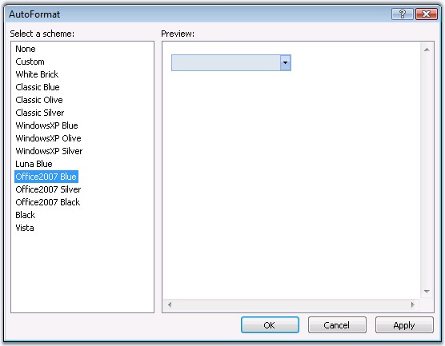
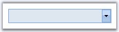
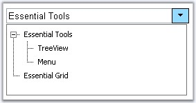
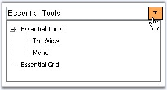
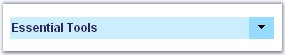
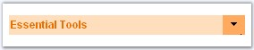
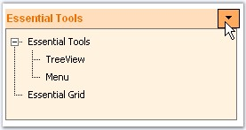

This section discusses the pre-defined styles that can be applied for the control and the css styles that can be applied for the various sections of the GenericDropDown control in the following topics.
The GenericDropDown control provides pre-defined set of styles that can be applied to your control just on a click of the button. You can set the desired look and feel for the control that includes some popular styles too.
Right-clicking the control and selecting the 'Auto Format...' option opens the following Auto Format dialog box.

The left pane lists the various pre-defined style scheme that are available. The right pane shows the preview of the currently selected scheme. Select the required style and click OK to apply the selected scheme to the control.
Example of a popular look and feel
The following image shows the control with White Brick style setting.

Figure 101
The look and feel of the control can be customized by using the CSS properties to enrich the appearance settings which has been discussed below.
Customizing the Button
The button image on the right of the control can be customized and styles can be set by using ButtonCssClass and ButtonHoverCssClass properties.
|
Property |
Description |
|
ButtonCssClass |
Specifies the css definitions to apply to the button's html element. |
|
ButtonHoverCssClass |
Specifies the css definitions to apply for the button on mouse over. |

Figure 102: Styles applied to the Button

Figure 103: Styles applied for Button Hover
CSS definitions used for the button and during mouse hover are shown below. These CSS definitions must be set to the above discussed properties to apply the styles to the button.
|
.BtnCSS { border:1px solid #A0DEFF; width:25px; cursor:pointer; background-Color:#A0DEFF; }
.BtnHoverCSS { border:1px solid #FFB26A; width:25px; cursor:pointer; background-Color:#FFB26A; } |
Customizing the TextBox
The TextBox can be customized by using the style properties TextBoxCssClass, TextHoverCssClass which helps to set different styles for the text and textbox.

Figure 104: Styles applied to the TextBox

Figure 105: Styles applied for TextBox Hover
|
Property |
Description |
|
TextBoxCssClass |
Specifies the css definitions to apply to the Text container. |
|
TextBoxHoverCssClass |
Specifies the css definitions to apply to the text container on mouse over. |
CSS definitions used for the text box and during mouse hover are shown below. These CSS definitions must be set to the above discussed properties to apply the styles to both text and the textbox.
|
.TextBoxCSS { color:#333365; font-name:tahoma; font-size:12px; font-weight:bold; background-Color:#d0f0ff; border:1px solid #d0f0ff; } .TextBoxHoverCSS { color:#ee7a03; font-name:tahoma; font-size:12px; font-weight:bold; background-Color:#ffe1c4; border:1px solid #ffe1c4; } |
Customizing the TextBox elements
Styles can be applied to the outer html elements of the text box by using the properties ControlRootCssClass, ContainerHoverCSSClass and ContainerTableCssClass. These properties can be used to apply styles to the various structured layers of the text box.
|
Property |
Description |
|
ContainerHoverCSSClass |
Specifies the css definitions to apply to the container table on mouse hover. |
|
ContainerTableCssClass |
Specifies the css definitions to apply to the container table. |
|
ControlRootCSSClass |
Specifies the css definitions to use for the root elements of the control. |
Customizing the Popup Container
The PopupCSSClass can be used to apply different styles to the container that pops up on button click.

Figure 106: Styles applied to the Pop-up Container
|
Property |
Description |
|
PopupCssClass |
Specifies the css definitions to apply to the control container's html element. |